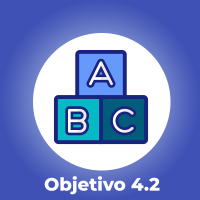
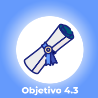
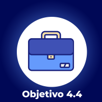
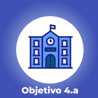
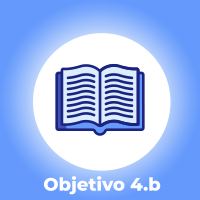
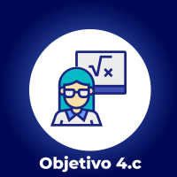

Série 4 | Curso 1
Educação Aberta
Aula 1
Educação e Compromisso Social
Seja bem-vindo ao curso sobre Educação Aberta!
Este é o primeiro curso na trajetória da Formação Modular sobre Ciência Aberta que aborda a temática da Educação Aberta.
O objetivo é conhecer o conceito de Educação Aberta, o contexto em que se insere e seu compromisso com a democratização do acesso ao saber.
Bons estudos!
Introdução
Bem-vindos à primeira aula do curso! Esperamos que ao final desta aula você possa:
Educação Aberta: contexto
A educação não é um negócio, é criação.
István Mészaros
Para o autor dessa frase, István Mészaros, devemos reafirmar a educação na sua natureza de qualificar para a vida e não para o mercado. Pensando nessa concepção de educação, qual seria seu papel na construção de uma sociedade mais democrática?
O simples acesso à escola não garante uma educação de qualidade e nem mesmo o acesso ao conhecimento. Assim, compreendemos que as ações vão muito além dos espaços da sala de aula. Mészáro — citando Gramsci — ressaltou que “educar é colocar fim à separação entre Homo faber e Homo sapiens; é resgatar o sentido estruturante da educação e de sua relação com o trabalho, as suas possibilidades criativas e emancipatórias. (MÉSZAROS, 2014)
Fonte: Freepik
Relembrando o que é Ciência Aberta:
A Ciência Aberta é a atividade científica praticada de modo aberto, colaborativo e transparente, em todos os domínios do conhecimento, desde as ciências fundamentais até as ciências sociais e humanidades.
E aprofundando um pouco mais, segundo a definição de Foster (Facilitating Open Science Training for European Research):
A prática da ciência de tal forma que outros podem colaborar e contribuir, na qual os dados de pesquisa, as notas de laboratório e outros processos de pesquisa estão disponíveis livremente, em condições que permitem a reutilização, redistribuição e reprodução da pesquisa e dos dados e métodos subjacentes.
Refletindo sobre o conceito de Ciência Aberta, perguntamos: quais são os desafios para ampliar o acesso ao saber?
Saiba mais
O debate e as iniciativas em torno do acesso aberto ao conhecimento científico vêm crescendo nos últimos anos, se expandindo para outras áreas, inclusive para a área da educação.
A ampliação do acesso ao saber demanda esforços políticos e estímulo a uma cultura de mudança, envolvendo enfrentamentos no campo do direito, mais especificamente de direitos autorais. Neste contexto de antagonismos ideológicos, tem crescido a defesa pela educação aberta.
Em que medida a discussão sobre o modelo de ciência indica o nível de desenvolvimento de um país?
Para alguns autores, essa questão está colocada ao se discutir modelos de desenvolvimento, uma vez que os pobres são certamente os mais afetados pelos sistemas de apropriação privada do conhecimento, principalmente em áreas sensíveis, como a de medicamentos, agricultura e alimentação (ALBAGLI, 2014). Estamos diante de novas perspectivas para uma antiga questão: o direito ao conhecimento, como direito do cidadão ao acesso à educação, ao saber. Pode-se afirmar que o debate atual sobre o direito ao conhecimento é um dos temas centrais na construção da democracia nas sociedades contemporâneas.
O termo Educação Aberta é utilizado na literatura há décadas, expressando muitas vezes formas inovadoras de educação, modelos pedagógicos revolucionários e, mais recentemente, está relacionado a movimentos de acesso aberto e recursos educacionais. Lewis e Spencer (1986) definem a Educação Aberta como um termo utilizado para descrever cursos flexíveis, desenvolvidos para atender necessidades individuais; que visam remover as barreiras de acesso à educação tradicional, e sugerem uma filosofia de aprendizagem centrada no aluno (SANTOS, 2012). Na aula 2 você poderá ter acesso aos conceitos e princípios da Educação Aberta.
Você acredita em Educação Aberta?
Vídeo 1 - Vídeo remixado em que educadores demonstram seu apoio à Educação Aberta. O vídeo original foi realizado pelo Instituto EducaDigital com o objetivo de incentivar a realização do Guia Educação Aberta.
Fonte: Instituto EducaDigital
A Educação Aberta é um projeto de 150 anos. Sua grande vantagem, principalmente nos dias de hoje, é facilitar o acesso ao conhecimento. A Educação Aberta tem que ser para todos, inclusiva, acessível, equitativa, de qualidade e progressista.
A produção colaborativa facilitada pelos Recursos Educacionais Abertos (REA), que é participativa e igualitária, valoriza a educação pública, abre novos modelos de negócios, quebra oligopólios e permite uma mudança radical no processo de produção. Nesta videoaula, o professor Tel Amiel, doutor em tecnologia educacional na University of Georgia e pós-doutorado (Fapesp) na FE/Unicamp e Unesco, aborda os principais conceitos da Educação Aberta e traça um panorama atual do movimento.
Vídeo 2 - Educação Aberta - conceitos e panorama atual. Trecho da palestra do professor Tel Amiel, doutor em tecnologia educacional na University of Georgia e pós-doutorado (Fapesp) na FE/Unicamp e Unesco, realizada na Fiocruz em 2019.
Fonte: Fiocruz (2019)
Recursos Educacionais Abertos (REA) podem ser considerados componentes (ou estratégias/práticas) da Educação Aberta, que contempla o compartilhamento de conteúdo digital com licença de uso aberta. (SANTOS, 2012)
No centro desse debate — entre a promoção da educação aberta e a proteção por propriedade intelectual — desdobram-se na verdade os interesses econômicos de editoras, instituições de ensino particulares, e muitas vezes atingem o ensino público em geral, e especialmente, o universo da pós-graduação, especialização ou formação profissional continuada.
O debate sobre acesso aberto deve ser ampliado: entende-se que o conteúdo científico e didático compõe uma Educação Aberta e aponta diferentes cenários e definições sobre o papel da ciência. Existe um consenso sobre a importância da educação nas sociedades e sua prioridade. Partindo dessa premissa, a escola ou qualquer instituição de ensino pode, portanto, ser vista como um “bem comum” (MANTOVANI; DIAS; LIESENBERG. 2006).
A importância da educação e das escolas como “bem comum” faz com que a Educação Aberta se relacione ao 4º Objetivo de Desenvolvimento Sustentável, que enfatiza qualidade e equidade.
Educação Aberta no contexto dos Objetivos de Desenvolvimento Sustentável (ODS)
A Agenda 2030 é um plano de ação para as pessoas, o planeta e a prosperidade, que busca fortalecer a paz universal.
Em setembro de 2015, líderes mundiais reuniram-se na sede da Organização das Nações Unidas (ONU), em Nova York, e elaboraram um plano de ação para erradicar a pobreza, proteger o planeta e garantir que as pessoas alcancem a paz e a prosperidade: a Agenda 2030 para o Desenvolvimento Sustentável, composta por 17 Objetivos de Desenvolvimento Sustentável (ODS), e 169 metas, visando erradicar a pobreza e promover vida digna para todos, respeitando os limites do planeta.
Fonte: ONU.
Educação de Qualidade
O Objetivo 4 é o que se refere à educação.
Clique nas imagens para visualizar os Objetivos.
-

Até 2030, garantir que todos as meninas e meninos tenham acesso a um desenvolvimento de qualidade na primeira infância, cuidados e educação pré-escolar, de modo que eles estejam prontos para o ensino primário.
-

Até 2030, assegurar a igualdade de acesso para todos os homens e mulheres à educação técnica, profissional e superior de qualidade, a preços acessíveis, incluindo universidade.
-

Até 2030, aumentar substancialmente o número de jovens e adultos que tenham habilidades relevantes, inclusive competências técnicas e profissionais, para emprego, trabalho decente e empreendedorismo.
-
Até 2030, garantir que todos os alunos adquiram conhecimentos e habilidades necessárias para promover o desenvolvimento sustentável, inclusive, entre outros, por meio da educação para o desenvolvimento sustentável e estilos de vida sustentáveis, direitos humanos, igualdade de gênero, promoção de uma cultura de paz e não violência, cidadania global e valorização da diversidade cultural e da contribuição da cultura para o desenvolvimento sustentável.
-

Construir e melhorar instalações físicas para educação, apropriadas para crianças e sensíveis às deficiências e ao gênero, e que proporcionem ambientes de aprendizagem seguros e não violentos, inclusivos e eficazes para todos.
-

Até 2020, substancialmente ampliar globalmente o número de bolsas de estudo para os países em desenvolvimento, em particular os países menos desenvolvidos, pequenos Estados insulares em desenvolvimento e os países africanos, para o ensino superior, incluindo programas de formação profissional, de tecnologia da informação e da comunicação, técnicos, de engenharia e programas científicos em países desenvolvidos e outros países em desenvolvimento.
-

Até 2030, substancialmente aumentar o contingente de professores qualificados, inclusive por meio da cooperação internacional para a formação de professores, nos países em desenvolvimento, especialmente os países menos desenvolvidos e pequenos Estados insulares em desenvolvimento.
Em 2017, a Unesco realizou, na Eslovênia, o 2º Congresso Mundial de Recursos Educacionais Abertos. O tema central do evento foi: “Como a Educação Aberta, por meio de Recursos Educacionais Abertos, pode contribuir com a melhoria da equidade e da qualidade da educação, tendo como base o 4º Objetivo do Desenvolvimento Sustentável da ONU?”
o 2º Congresso Mundial de Recursos Educacionais Abertos da UNESCO/COL que ocorreu em 2017 na Eslovênia trouxe o tema central do evento “como a Educação Aberta, por meio dos Recursos Educacionais Abertos podem contribuir com a melhoria da equidade e da qualidade da educação, tendo como base o.
A Agenda 2030 para o Desenvolvimento Sustentável
Agenda 2030
Fonte: ONU (Arte de Ken Robinson/Global Goals)
Como vimos, a Agenda 2030 para o Desenvolvimento Sustentável, mantém a educação (inclusiva, equitativa e de qualidade) como elemento fundamental rumo à sustentabilidade do planeta, e destaca a tecnologia no processo de impulsionar o progresso humano, eliminar o fosso digital e fomentar o desenvolvimento de sociedades do conhecimento.
Se a tecnologia digital é um fator que pode contribuir com a melhoria do acesso à educação de qualidade, a forma como criamos e compartilhamos conhecimento hoje — especialmente considerando o papel dos docentes e pesquisadores das universidades públicas — se torna fundamental nesse processo.
Vídeo 3 - Esforços para alcançar metas da Agenda 2030 para a Educação
Fonte: ONU News (2019)
O esforço global de 15 anos para melhorar a vida das pessoas em todo o mundo por meio do alcance dos 17 Objetivos de Desenvolvimento Sustentável (ODS) até 2030 já estava fora de curso no fim de 2019.
A crise decorrente da pandemia de Covid-19 e seus graves efeitos, num curto período, traz prejuízos e interrompe o progresso dos ODS. Segundo relatório do Departamento de Assuntos Econômicos e Sociais das Nações Unidas, as pessoas mais vulneráveis e pobres do mundo vem sendo as mais afetadas pela pandemia.
O mundo fez progressos em áreas saúde materna e infantil, acesso à eletricidade e representação das mulheres em governos. Porém, ao mesmo tempo, houve aumento da insegurança alimentar, da deterioração do meio ambiente natural e das persistentes e generalizadas desigualdades.
Dados e estimativas mais recentes do levantamento anual sobre o progresso dos 17 ODS, de forma transversal, mostram que os mais pobres e vulneráveis – crianças, idosos, pessoas com deficiência, migrantes e refugiados – são atingidos de forma mais dura pelos efeitos da pandemia da Covid-19. O impacto da crise também é maior para as mulheres.
Saiba mais
Para conhecer os efeitos da Covid-19 nos Objetivos de Desenvolvimento Sustentável, acesse: https://nacoesunidas.org/relatorio-da-onu-sobre-progresso-dos-ods-aponta-que-covid-19-esta-comprometendo-avancos-sociais/amp/
Para refletir
Como nossa produção acadêmica dialoga com as demandas da comunidade?
De que maneira podemos disponibilizar o que já desenvolvemos nos variados cursos e formações?
Fonte: Freepik
Os pesquisadores Simon e Vieira ressaltam que é preciso considerar as novas formas de produção social que emergem com o avanço da tecnologia digital e de que forma favorecem (ou impulsionam) o estabelecimento de um novo modelo de prática acadêmica, mais colaborativo e que valoriza o conhecimento como bem comum.
Políticas e práticas de
Educação Aberta no mundo
As políticas e práticas de Educação Aberta no mundo foram estabelecidas em Conferências que resultaram em declarações internacionais ou documentos com uma série de compromissos.
As declarações destacam que os governos devem disponibilizar, de forma aberta e gratuita, materiais e conteúdos que tenham sido financiados por recursos públicos.
Vamos conhecer, agora, os principais compromissos internacionais:
1990
2002
Fórum Mundial da Unesco
O termo Recursos Educacionais Abertos (REA) foi aprovado neste Fórum , que instituiu a seguinte definição:
REA são materiais de ensino, aprendizado e pesquisa em qualquer meio disponível no domínio público, que foram disponibilizados com licenças abertas, que permitem acesso, uso, reciclagem, reutilização e redistribuição por terceiros.
Saiba mais2002
2003
2003
2007
Declaração de Educação Aberta da Cidade do Cabo
Este movimento educacional emergente combina a tradição estabelecida de compartilhar boas ideias com colegas educadores, e a cultura colaborativa e interativa da Internet. Está construída sobre a crença de que a cada um deveria ter a liberdade de usar, adaptar à medida de suas necessidades, melhorar e redistribuir recursos educacionais sem restrições. Os educadores, estudantes e outros que compartilhem esta crença estão se reunindo como parte de um esforço mundial.
Saiba mais2012
Declaração REA de Paris
O Congresso Mundial REA, reunido na Unesco, em Paris, de 20 a 22 de junho de 2012, tendo em vista declarações internacionais pertinentes cunhadas anteriormente, produziu um dos principais documentos da área para governos sobre políticas de Recursos Educacionais Abertos. E recomenda aos Estados, na medida das suas capacidades e sob a sua autoridade, reforçar a sensibilização e a utilização dos REA, e promover o uso desses recursos. O objetivo é ampliar o acesso à instrução em todos os níveis (tanto a educação formal como não-formal), numa perspectiva de aprendizagem ao longo da vida. Dessa forma, é possível contribuir para a inclusão social, a equidade entre os gêneros, assim como para o ensino com necessidades específicas, e para o aumento da qualidade e da eficiência dos resultados do ensino e do aprendizado, através de uso mais amplo dos Recursos Educacionais Abertos.
Saiba mais2015
Declaração de Quingdão
Resultado da Conferência sobre Tecnologias Educacionais na Educação em Quingdão, na China, o texto ressalta que Recursos Educacionais Abertos proporcionam oportunidades de melhorar a qualidade e expandir o acesso aos conteúdos de aprendizagem, catalisar o uso inovador de conteúdo e estimular a criação de conhecimento.
Saiba mais2017
Declaração de Ljubljana/Eslovênia
Como resultado do Congresso, líderes de governo de 111 países presentes lançaram um documento inédito, com recomendações práticas rumo à efetividade de REA, chamado Ljubljana OER Action Plan 2017 (Plano de Ação REA de Ljubljana 2017).
Saiba maisConclusão
Chegamos ao final da aula, você conheceu o contexto em que surgem as discussões sobre Educação Aberta, sua relação com os Objetivos de Desenvolvimento Sustentável e a Agenda 2030, além de conhecer as diferentes declarações e conferências no mundo.
Esperamos ver você, em breve, na aula 2. Até já!